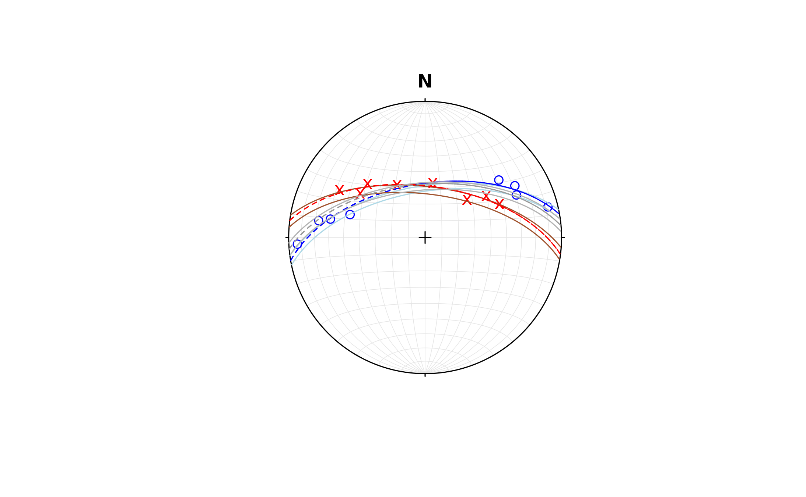

Least-Squares Small and Great Circle Fit for Spherical Data
Source:R/best_pole.R
regression-gray.RdFinds the best small and great circles using the algorithm by Gray et al. (1980)
Usage
regression_gray(
x,
out = c("great", "small", "both"),
sigma2 = 10,
tol = NULL,
max_iter = 100,
verbose = FALSE
)
regression_smallcircle_gray(
x,
sigma2 = 10,
tol = NULL,
max_iter = 100,
verbose = FALSE
)
regression_greatcircle_gray(
x,
sigma2 = 10,
tol = NULL,
max_iter = 100,
verbose = FALSE
)Arguments
- x
object of class
"Vec3","Line","Ray", or"Plane", where the rows are the observations and the columns are the coordinates.- out
character. Type of regression.
"small"for a small-circle fit,"great"for the great-circle fit, and"both"for small- and great-circle estimates.- sigma2
numeric. Known error in degrees for a goodness-of-fit test. Default is
10- tol
numeric. Machine precision. Defaults to
getOption("structr.tol").- max_iter
integer. Number of Newton-Lagrange optimizations. Default is
100- verbose
logical. Whether results of the iteration should be printed during the calculation. Default is
FALSE
Value
list.
vecLineofVec3object, sthe axis of the circle solutionconeHalf-apical angle of the small-circle in degrees. Alway 90° for a great-circle solution.
r_squaredResidual sum of squares
residualsPer-point residuals
iterations,converged,pNewton-iteration diagnostics
typecharacter. Type of the solution
statistic,df,p_valueStatistic, degrees of freedom and p-value of the \(\chi^2\) goodness-of-fit test
If out = 'both, the a comparison of both solutions is added to the output:
V_rTest statistic \(V_r\)
df1, df2Degrees of freedom of the small and the great circle data, respectively
p_valueP-value of the comparison test
Details
References
Gray, N.H., Geiser, P.A., Geiser, J.R. (1980). On the least-square fit of small and great circles to spherically projected data. Mathematical Geology, Vol. 12, No. 3, 1980.
Examples
data("gray_example")
# regression:
best_clea <- regression_gray(gray_example[1:8, ], out = "both")
best_bedd <- regression_gray(gray_example[9:16, ], out = "both")
best_all <- regression_gray(gray_example, out = "both")
# R-squared values:
best_clea$great$r_squared
#> [1] 0.0162995
best_bedd$great$r_squared
#> [1] 0.01157816
best_all$great$r_squared
#> [1] 0.1340548
stereoplot()
points(gray_example[1:8, ], col = "blue")
points(gray_example[9:16, ], col = "red", pch = "x")
# best for cleavage
lines(best_clea$small$vec, best_clea$small$cone, col = "lightblue")
lines(best_clea$great$vec, 90, lty = 2, col = "blue")
# best for bedding
lines(best_bedd$small$vec, best_bedd$small$cone, col = "sienna")
lines(best_bedd$great$vec, 90, lty = 2, col = "red")
# best for all
lines(best_all$small$vec, best_bedd$small$cone, col = "gray70")
lines(best_all$great$vec, 90, lty = 2, col = "gray60")

# Compare small and great-circle solution:
regression_gray(gray_example[1:8, ], out = "both")$comparison
#> $Vr
#> [1] 0.3612363
#>
#> $df1
#> [1] 1
#>
#> $df2
#> [1] 5
#>
#> $p_value
#> [1] 0.5740261
#>
#> $interpretation
#> [1] "no significant improvement over the great circle (p>=0.05)"
#>
regression_gray(gray_example[9:16, ], out = "both")$comparison
#> $Vr
#> [1] 0.09670531
#>
#> $df1
#> [1] 1
#>
#> $df2
#> [1] 5
#>
#> $p_value
#> [1] 0.7683665
#>
#> $interpretation
#> [1] "no significant improvement over the great circle (p>=0.05)"
#>
regression_gray(gray_example, out = "both")$comparison
#> $Vr
#> [1] 0.04754425
#>
#> $df1
#> [1] 1
#>
#> $df2
#> [1] 13
#>
#> $p_value
#> [1] 0.8307783
#>
#> $interpretation
#> [1] "no significant improvement over the great circle (p>=0.05)"
#>